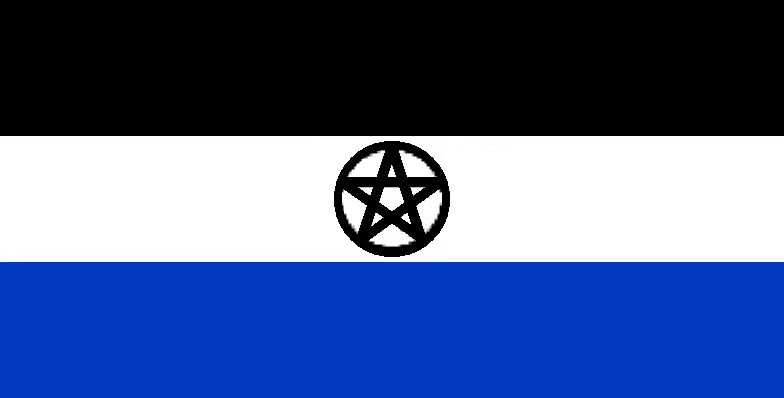

萨尔瓦多社区由山东人刘三土创建，“萨尔瓦多”源自于西班牙语“Salvador”（救世主），萨尔瓦多社区最初是一个毫不起眼的小组织，因翻译与萨尔瓦多社区宗旨出奇一致，而被社区赋予神圣（“
条目：刘三土
| 目录 |
| 1 区旗 |
| 2 成员们的日常 |
| 2.1 交流 |
| 2.2 敬礼 |
| 2.3 货币 |
| 3 社区宗旨 |
萨尔瓦多区旗的概述图（1张）

萨尔瓦多区旗设计为三色旗是为了与国际统一，但并非国旗，黑色象征萨尔瓦多社区曾经有过“帝国”时期，白色象征新生的萨尔瓦多正在从零开始发展，蓝色象征萨尔瓦多成员们共同的努力，正一步步向优秀的且类型相似的希顶社区看齐。五芒星有多种释义：①萨尔瓦多社区因为宗旨与救世主十分相似，所以象征黑暗中的救世主。②萨尔瓦多社区分为萨尔瓦多专区，萨尔瓦多希顶社区，萨尔瓦多第二帝国，萨尔瓦多世界社区，萨尔瓦多撒哈拉社区，但同属于萨尔瓦多社区。③萨尔瓦多社区有代表作：萨尔瓦多语，萨尔瓦多希顶语，萨尔瓦多字母，萨尔瓦多文化文明，萨尔瓦多维基百科。④萨尔瓦多社区的五种品德：自由，人性，帮助，友好，保护。五芒星的周围是一个圆圈，代表一个完整的萨尔瓦多社区。
萨尔瓦多区旗由刘三土设计，据说刘三土有一次睡觉时梦到了一个地方，到处充满和平美好，理想主义，在这个地方，随处可见一个标志——圆圈里面的五芒星。于是刘三土就永远记住了这个标记，在设计萨尔瓦多区旗时，也不忘加上这颗五芒星，并因为刘三土而产生新的定义。对于刘三土而言，这更像是图腾，或是象征，萨尔瓦多精神和深厚的情意都蕴含在这颗神圣的五芒星中。
萨尔瓦多的区旗标准长宽比为2:1，萨尔瓦多区旗也同样是萨尔瓦多帝国（萨尔瓦多世界线中，现实世界不存在）的国旗。这也是萨尔瓦多世界线中所有国家国旗的整齐长宽比。萨尔瓦多区旗的圆圈五芒星直径大小大约为白条纹的85-95%，线条粗细大约是圆圈五芒星直径大小的5-10%，没有硬性要求，但要求圆圈必须是正圆，五芒星必须是正五芒星，一个角竖直向上。
萨尔瓦多成员们的私密交流一般使用萨尔瓦多语，但萨尔瓦多的某些地区和个人私密交流一般使用萨尔瓦多希顶语，日常交流还是使用原本的语言。萨尔瓦多成员在日常交流一般在QQ群或是在微信地方群中交流，但因为不能在微信输入萨尔瓦多字母，而在一些时候会使用原本的语言。
萨尔瓦多军礼和日常敬礼是相同的，类似于我国军礼，只不过把右手换成了左手，仅限在内部使用，不允许对非萨尔瓦多成员使用。
萨尔瓦多有一种虚拟货币“萨元”，符号为萨尔瓦多字母Φφ大写在中间加一条两边出头的横（
萨尔瓦多的宗旨之一：不会恶意对世界造成伤害。
萨尔瓦多社区立志保护世界上的各种文化，加强各文化间的包容与融合，减少世界上的各种文化利益纠纷，减少文化冲突，文化入侵，对于各国势力，我们做不了什么，但我们可以尽一切努力，为整个世界提供便利，很多人看来，21世纪文化将与战争产生密切联系，所以萨尔瓦多社区选择了最直接的一种方式——创建人造文化圈，这才有了“救世主”的信仰。——刘三土